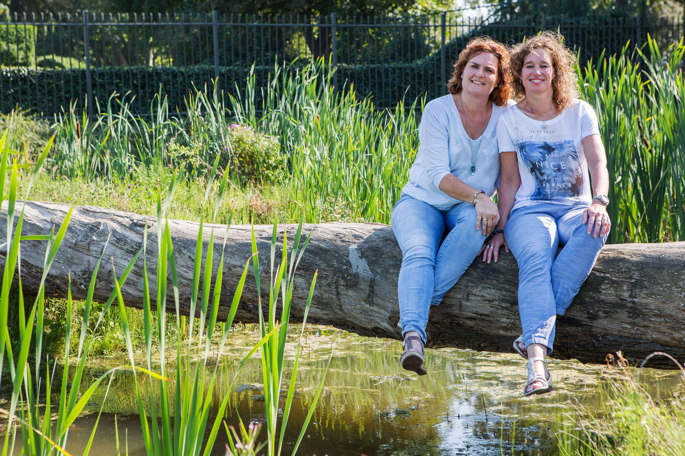
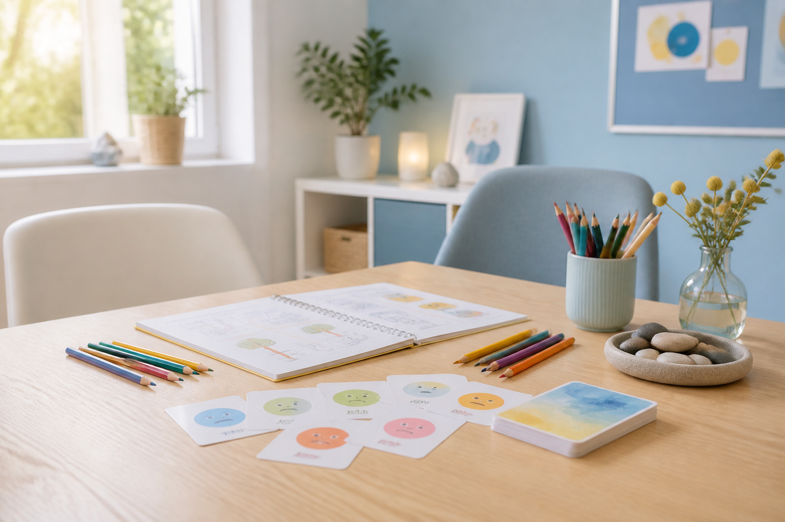
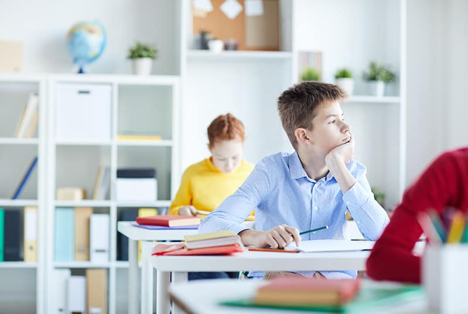
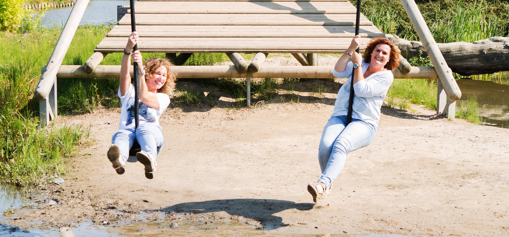

Intake met kind en ouder
Onze coaching start met een intakegesprek met zowel kind als ouder(s). Daarna stellen we samen leerpunten en doelen vast.
Positief denken, voelen en doen
Snap je coaching en training is gespecialiseerd in het beter leren omgaan met jezelf en met anderen.Wij helpen kinderen en jongeren om lastige situaties positiever te benaderen, met weerbaarheid en zelfvertrouwen.
Actuele beschikbaarheidOp dit moment zijn onze agenda's helemaal gevuld met begeleiding aan kinderen en jongeren, zowel in de praktijk als op scholen. We durven geen termijn te noemen waarop er weer plekjes zijn en hopen op uw begrip.

Coaching
Voor ons is ieder kind een individu, een uniek mens die bij ons alle persoonlijke aandacht krijgt die nodig is.
Onze coaching start met een intakegesprek met zowel kind als ouder(s). Daarna stellen we samen leerpunten en doelen vast.
De inbreng van het kind is belangrijk: het gaat tenslotte om zijn of haar ontwikkeling.
Elk begeleidingsplan wordt op maat gemaakt, tussentijds geëvalueerd en indien nodig bijgesteld.
Ons aanbod
Het begeleiden van kinderen en jongeren bij hun emotionele en sociale ontwikkeling is onze specialiteit. U kunt voor uiteenlopende coachings- of begeleidingsvragen bij ons terecht.
We coachen rond angst, teleurstelling en negatieve emoties. Het vergroten van zelfvertrouwen loopt als rode draad door de begeleiding heen.
Ouders en scholen vragen ook hulp bij werkhouding, werkaanpak, concentratie en planning. Hierbij werken we onder andere met Beter bij de les.
Kinderen en jongeren die te maken krijgen met echtscheiding kunnen bij Astrid terecht voor begeleiding vanuit het programma KIES.

Herkenbare hulpvragen
Onzekerheid, functioneren in een groep, omgaan met (faal)angst, verdriet, boosheid, (hoog)gevoeligheid en talloze alledaagse situaties kunnen voor kinderen en jongeren ingewikkeld worden. Door coaching en training helpen we hen weer op weg.
We zoeken naar wat er speelt en welke handvatten passen bij de hulpvraag.
Kinderen oefenen met helpende gedachten, sociale vaardigheden en haalbare stappen.
Sensitherapie
Opgedane negatieve ervaringen kunnen bij onvoldoende verwerking onbewust worden vastgezet in het lichaam waardoor je emotioneel en/of fysiek uit balans raakt.
Sensitherapie is erop gericht om emotionele blokkades op te heffen en de energetische stroming weer in balans te brengen.
De definitieve tekst over de gebruikte technieken wordt binnenkort door Margriet aangeleverd.
Een sensitherapiebehandeling wordt door Margriet uitgevoerd in haar praktijkruimte aan huis. Bij kinderen duurt een behandeling ongeveer een uur.
Voor scholen
Snap je coaching en training verzorgt een flink aantal onderwijsondersteuningsarrangementen op scholen in onze regio: Gouda, Lansingerland, Zoetermeer, Delft en Voorburg. Scholen, samenwerkingsverbanden en zorgteams kunnen hiervoor een aanvraag doen.
Zoals bij al ons aanbod zorgen we voor maatwerk. Het arrangement wordt ingevuld vanuit onze expertise op het gebied van coaching en training van de emotionele ontwikkeling, sociale weerbaarheid en sociale vaardigheden, executieve functies, werkhouding en concentratie.
Daarnaast nemen we onze jarenlange ervaring mee in het werken met kinderen met een stoornis zoals ASS en/of AD(H)D.
We nemen deel aan overleggen met ouders, school, samenwerkingsverband en ambulant begeleiders van welke dienst dan ook. Voorafgaand aan een overleg maken we een begeleidingsverslag.
Wanneer een school een aanvraag voor een arrangement bij ons indient, maken we een offerte op maat.

Over ons

Contact
Heeft u een vraag of bent u geïnteresseerd in coaching of training? Stuur direct een mail naar info@snapje.nl of neem telefonisch contact op met Astrid of Margriet.
Zoekt u training of coaching voor uw kind, neem dan contact op.
Onze praktijken zijn niet goed toegankelijk voor minder validen. Wij zijn gewend om ook ambulant te werken.